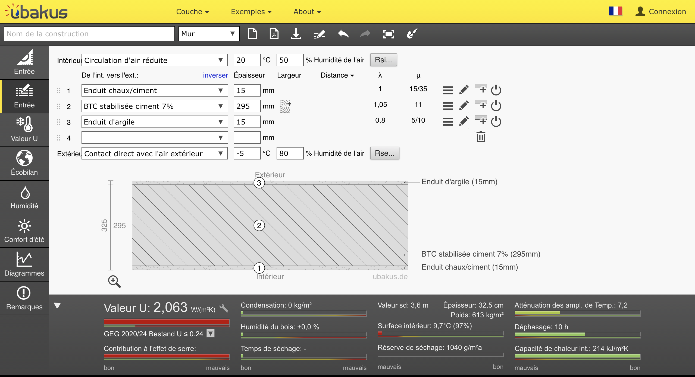
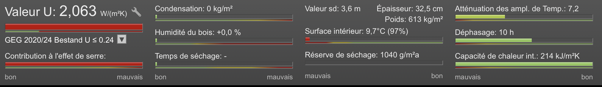
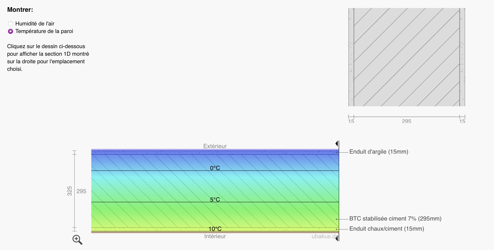
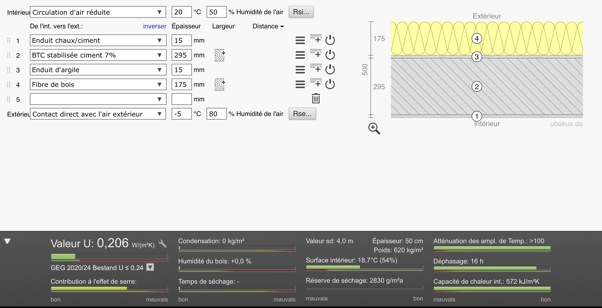

Quel U viser sur mes parois principales pour respecter la RE2020 ?
Tu es en esquisse, tu n'as pas encore de modèle thermique de bâtiment, mais tu veux savoir si tes parois envisagées atteindront un niveau de performance compatible avec la RE2020. Avant même de modéliser tout le bâtiment dans Pléiades, tu cherches à fixer une cible U raisonnable pour tes murs, planchers et toiture.
Pourquoi cette question compte
Nuance importante
La RE2020 ne fixe pas directement un U par paroi. Elle impose des indicateurs globaux (Bbio, Cep, Ic_construction, Ic_énergie, DH). Tu peux construire un bâtiment RE2020-conforme avec des compromis variés sur les différents postes.
En revanche, l'arrêté RE2020 prévoit des valeurs garde-fou à ne pas dépasser, et les bureaux d'études s'appuient sur des valeurs courantes observées en pratique pour orienter les choix d'enveloppe. Connaître ces ordres de grandeur permet de cadrer ses compositions dès l'esquisse.
| Niveau | U mur (W/m²·K) | Commentaire |
|---|---|---|
| Garde-fou RE2020 | ≤ 0,36 | Strict minimum réglementaire |
| Bâtiment de référence RE2020 | ~0,22 à 0,25 | Niveau courant marché neuf |
| Bonne pratique | ~0,18 à 0,22 | Performance solide |
| Passivhaus | ~0,12 à 0,15 | Très haute performance |
L'objectif de l'esquisse n'est pas de calculer un U précis, mais de s'assurer que la composition envisagée tombe dans la bonne plage.
Outil recommandé
Ubakus
Ubakus prend en entrée une paroi multi-couches (épaisseurs, matériaux) et calcule en quelques secondes le coefficient U, le comportement à la condensation, et le déphasage thermique. C'est l'outil le plus rapide pour dimensionner une paroi en phase amont, avant toute simulation de bâtiment.
Voir la fiche Ubakus →Premier temps : valider la démarche sur un cas mesuré (PhITEM)
Avant d'utiliser Ubakus pour dimensionner un projet, on commence par vérifier que l'outil donne des résultats cohérents sur un cas réel mesuré. PhITEM, la maison en terre du campus Grenoble INP, présente un mur monocouche en BTC stabilisée ciment 7% ; son U a été mesuré par instrumentation à 1,82 W/m²·K.
Étape 1 — Saisir la composition réelle du mur PhITEM
On entre les 3 couches du mur dans Ubakus (de l'intérieur vers l'extérieur) :
- Enduit chaux/ciment intérieur — 15 mm
- BTC stabilisée ciment 7% — 295 mm (matériau personnalisé : λ = 1,05 W/(m·K), μ = 11)
- Enduit d'argile extérieur — 15 mm

Étape 2 — Lire le résultat
Ubakus calcule instantanément un coefficient U = 2,06 W/m²·K, une épaisseur totale de 32,5 cm, un poids de 613 kg/m² et un déphasage de 10 h.

L'écart avec le U mesuré (1,82) est d'environ 13%. Cet écart est attendu : le λ « standard » de la BTC stabilisée est une valeur générique, alors que le matériau réel de PhITEM a probablement une conductivité légèrement plus basse (présence d'air, légère humidité d'équilibre). Conclusion : un calcul Ubakus donne le bon ordre de grandeur, pas la valeur exacte. C'est suffisant pour la phase esquisse.
Étape 3 — Visualiser le diagramme de température
L'onglet Diagrammes d'Ubakus montre comment la température évolue dans l'épaisseur du mur, de l'intérieur (20°C) vers l'extérieur (−5°C). Le mur PhITEM, monocouche, présente une décroissance linéaire — l'inverse d'un mur avec isolant rapporté où l'essentiel de la chute thermique se concentre dans l'isolant.

Deuxième temps : dimensionner une paroi RE2020
Maintenant qu'on sait utiliser Ubakus, on passe à la démarche de conception. PhITEM tel quel n'est pas RE2020-conforme (U = 2 alors que le garde-fou est à 0,36). On ajoute une couche de fibre de bois côté extérieur et on regarde comment l'épaisseur d'isolant fait évoluer le U.

| Épaisseur fibre de bois | U obtenu | Niveau atteint |
|---|---|---|
| 0 cm | 2,06 | Hors normes |
| 8 cm | 0,40 | Sous garde-fou RE2020 (0,36 à peine dépassé) |
| 12 cm | 0,29 | Bâtiment de référence RE2020 |
| 16 cm | 0,22 | Bonne pratique |
| 20 cm | 0,18 | Niveau Passivhaus |
Comment lire le résultat
Trois enseignements ressortent de ce test :
1. Les 8 premiers centimètres font 80% du travail. Passer de « sans isolant » à 8 cm fait chuter le U de 2,06 à 0,40, soit −80%. C'est massif. Les centimètres suivants n'apportent que des gains marginaux.
2. La cible RE2020 se joue vers 12–16 cm d'isolant biosourcé sur une paroi maçonnée standard. C'est l'ordre de grandeur à viser en esquisse — bien plus qu'un mur de 20 cm tout nu, bien moins qu'un mur de 60 cm.
3. Au-delà de 16 cm, le coût marginal devient absurde. Passer de 16 à 20 cm fait gagner 0,04 W/m²·K (4%), mais ajoute 4 cm d'épaisseur et autant de carbone incorporé. À justifier uniquement par une ambition Passivhaus.
Limites
- Ubakus ne remplace pas une simulation thermique dynamique. Le coefficient U est une caractéristique de paroi en régime permanent ; il ne dit rien sur le confort d'été, les apports solaires, les ponts thermiques au niveau du bâtiment, ni sur la consommation totale. Pour ces questions, il faut passer à Pléiades en APS.
- Le U calculé est théorique. Il diffère du U réel mesuré sur paroi pour plusieurs raisons (humidité, défauts de pose, inertie). L'écart est typiquement de 10 à 20%.
- La bibliothèque Ubakus est très orientée Allemagne. Pour certains matériaux français spécifiques (BTC stabilisée, terre crue locale), il faut créer un matériau personnalisé.
- La RE2020 ne fixe pas un U par paroi, mais des indicateurs globaux. Le U calculé ici est une aide à la décision, pas une preuve de conformité.
Alternatives
- Calcul à la main — R = épaisseur / λ, U = 1 / (Rsi + ΣR + Rse). Faisable pour vérifier l'ordre de grandeur d'Ubakus, mais long pour des parois multicouches.
- Pléiades / Ubakus intégré — Pléiades intègre nativement le calcul de U lors de la création des compositions de paroi. Avantage : cohérence avec la simulation thermique qui suivra.
Pour aller plus loin
- Arrêté du 4 août 2021 relatif à la RE2020 — valeurs garde-fou
- Documentation Ubakus — bibliothèque de matériaux
- ADEME — Guide « Isolation des murs »
- Fiche U global APS (Pléiades)